Denoising of the Letter "A" using Gibbs Sampling
with an Ising Prior and a Gaussian likelihood Based on code originally written by Brani Vidakovic PMTKreallySlow
Contents
setSeed(3); sigma = 2; % noise level % Input matrix consisting of letter A. % The body of letter A is made of 1's while the background is made of -1's. img = imread('lettera.bmp'); [M,N] = size(img); img = double(img); m = mean(img(:)); img2 = +1*(img>m) + -1*(img<m); % -1 or +1 figure(); imagesc(img2);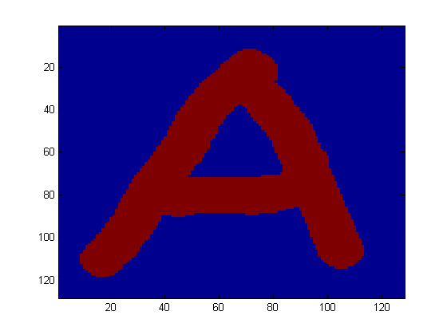
colormap gray; axis square; axis off printPmtkFigure gibbsDemoDenoisingNoNoise

y = img2 + sigma*randn(size(img2)); %y = noise signal figure(); imagesc(y); colormap gray; axis square; axis off title(sprintf('sigma=%2.1f', sigma)) printPmtkFigure(sprintf('gibbsDemoDenoisingOrigS%2.1f.eps', sigma)); fname = strrep(sprintf('gibbsDemoDenoisingOrigS%2.1f', sigma), '.', '-'); printPmtkFigure(fname);

Observation Model
offState = 1; onState = 2; mus = zeros(1,2); mus(offState) = -1; mus(onState) = +1; sigmas = [sigma sigma]; Npixels = M*N; localEvidence = zeros(Npixels, 2); for k=1:2 localEvidence(:,k) = gausspdf(y(:), mus(k), sigmas(k).^2); end guess = maxidx(localEvidence, [], 2); % start with best local guess X = ones(M, N); X(guess==offState) = -1; X(guess==onState) = +1; Xinit = X;
figure(); imagesc(Xinit);colormap gray; axis square; axis off title('initial guess') fname = sprintf('gibbsDemoDenoisingInitS%2.1f', sigma); printPmtkFigure(fname);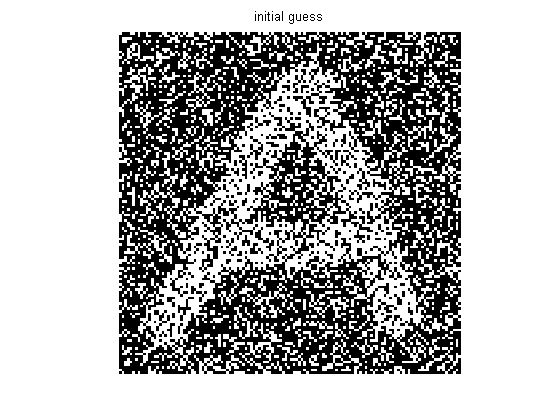
figure(); J = 1; avgX = zeros(M,N); X = Xinit; maxIter = 100000; burnIn = 50000; for iter =1:maxIter % select a pixel at random ix = ceil( N * rand(1) ); iy = ceil( M * rand(1) ); pos = iy + M*(ix-1); neighborhood = pos + [-1,1,-M,M]; neighborhood([iy==1,iy==M,ix==1,ix==N]) = []; % compute local conditional wi = sum( X(neighborhood) ); p1 = exp(J*wi) * localEvidence(pos,onState); p0 = exp(-J*wi) * localEvidence(pos,offState); prob = p1/(p0+p1); if rand < prob X(pos) = +1; else X(pos) = -1; end if iter > burnIn avgX = avgX+X; end % plotting if rem(iter,10000) == 0 figure(); imagesc(X); axis('square'); colormap gray; axis off; title(sprintf('sample %d', iter)); figure(); imagesc(X); colormap gray; axis square; axis off title(sprintf('sample %d', iter)) fname = sprintf('gibbsDemoDenoisingIter%dJ%3.2fS%2.1f', iter, J, sigma); printPmtkFigure(fname); end end nSamples = (maxIter-burnIn); avgX = avgX/nSamples; figure(); imagesc(avgX); colormap gray; axis square; axis off title(sprintf('posterior mean of last %d samples', nSamples)) fname = sprintf('gibbsDemoDenoisingMean%dJ%3.2fS%2.1f.eps', iter, J, sigma); printPmtkFigure(fname); printPmtkFigure('gibbsDemoDenoisingAvg');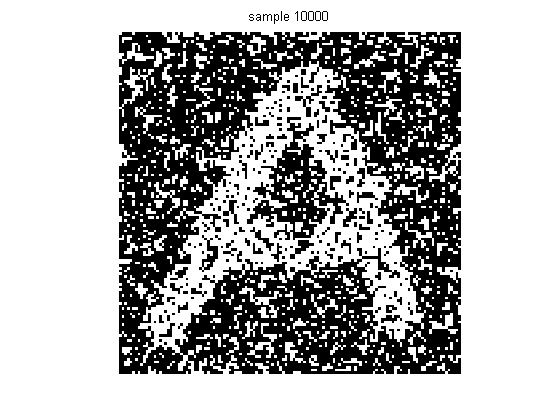 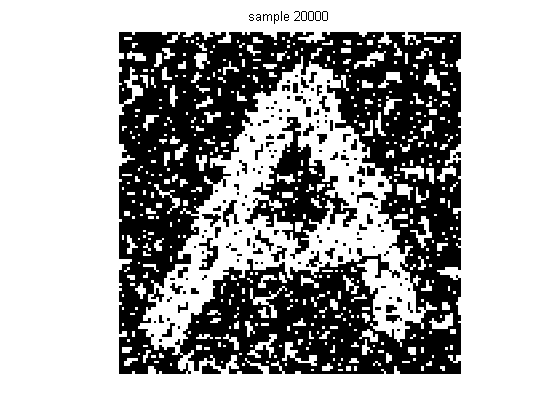 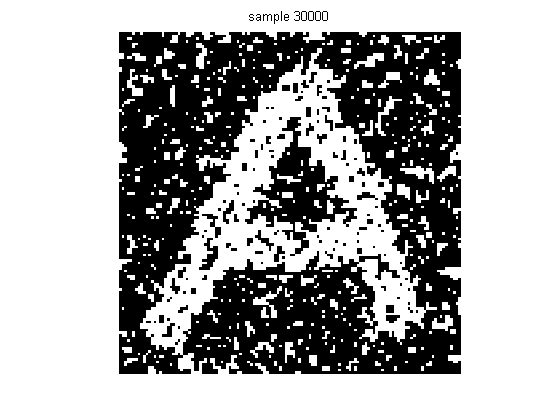


 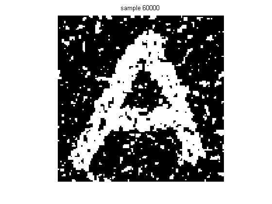
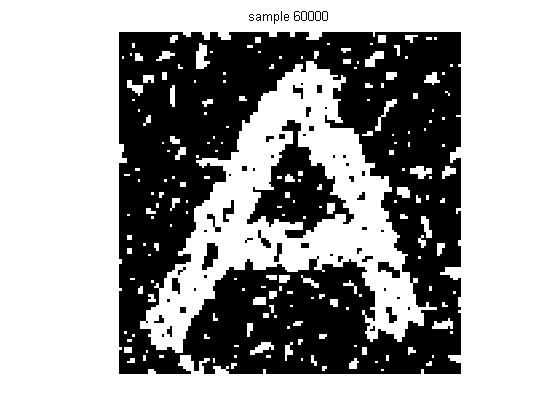  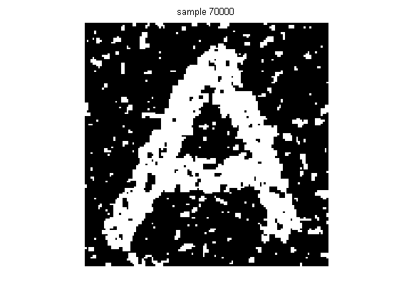
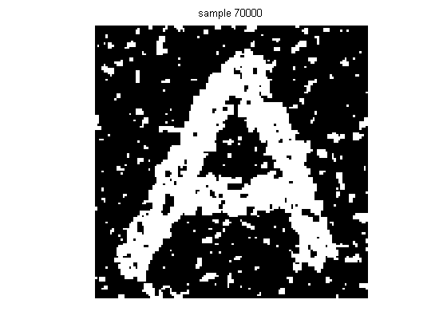 


 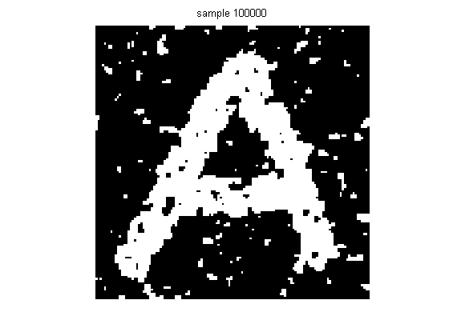
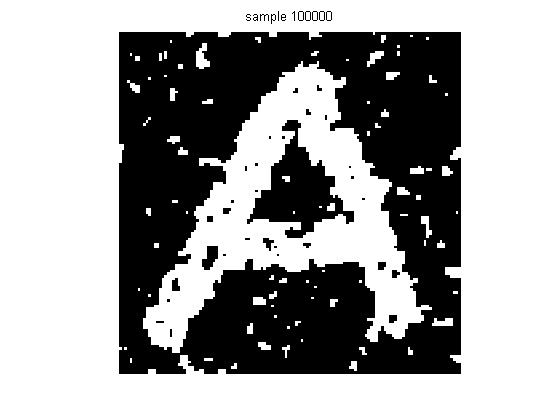